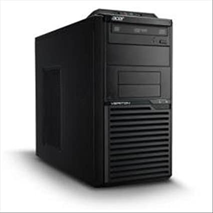
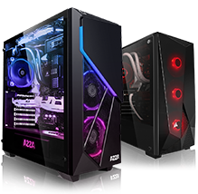
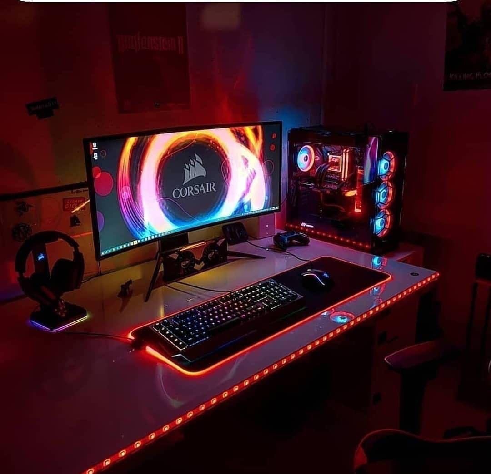

Alors sur cette page je vais vous présentez differents types de boîtiers :
Premièrement il y a deux types de boîtiers
Voici le boîtiers plutôt bureautique simple

Un boîtier de bureau qui comprend donc un bloc d'alimentation avec une carte mere avec un systeme d'entré et de sorties.
Ce boîtier peut être connecté en permanence à plusieurs périphériques comme un écran, un clavier, une souris, des haut-parleurs, un micro, un disque dur externe, une imprimante, un scanneur, etc. Le boîtier peut être placé à la verticale ou l'horizontale, sur le bureau, à côté ou sous celui-ci.
Pour ce type de boîtiers il ne faut pas s'attendre à avoir une grosse configuration car il y a un manque de place et ce type de boîtiers sont fait pour des pc dédié au traitement de texte ou meme faire du télétravail mais pas pour jouer a des jeux vidéos.
cliquez ici pour voir un boitier ou en cliquant sur l'image de la tour
Ici nous retrouvons un boitier avec un design travaillé

Un boîtier comme représenté à gauche on peut apercevoir une esthétique particulière comme des leds un peu partout, pour faire joli, la difference d'un boîtier pour les pc pas super performant et les boîtiers dédié pour les pc gaming c'est que la tour est ouverte et sur une tour de bureautique c'est fermé.
Avec ce types de boîtiers on peut avoir une assez grosse configurations car il y a beaucoup de place on peut voir qu'il faut des ventillateurs,une bonne Alimentation, carte graphique, un disque dur avec un ssd, au grand minimum 8 giga de ram (16 c'est bien ),avec aussi une carte mere et un bon processeur.
Voici ce qu'on peut retrouver dans une tour comme ca, quand on a une tour comme ca c'est pour jouer, stream ou tout simplement avoir un bon pc.
cliquez ici pour voir un boîtier gamer ou en cliquant sur l'image du boîtier
un magnifique setup !
↓ ↓
